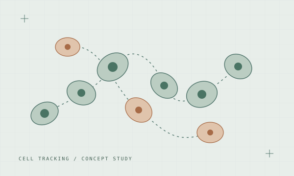

01—AFrom 3D cell detection to consistent lineages: learned link scores, graph optimization, and checks for missed cells and divisions.
51 / 3,947 teamsFinal private leaderboard
The project
A TemporalUNet3D detector and transformer association model fed an initial graph, followed by motion relinking and division checks. I worked on the connections between stages and tested how corrections behaved across movies and embryos.
I competed solo and earned a silver medal, finishing in the top 1.3% on the final private leaderboard.
View final results